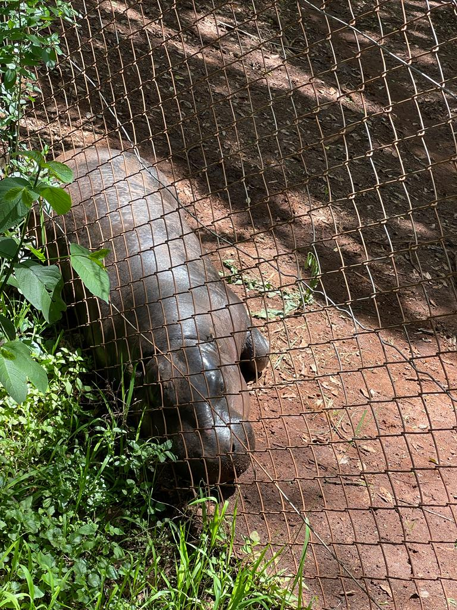
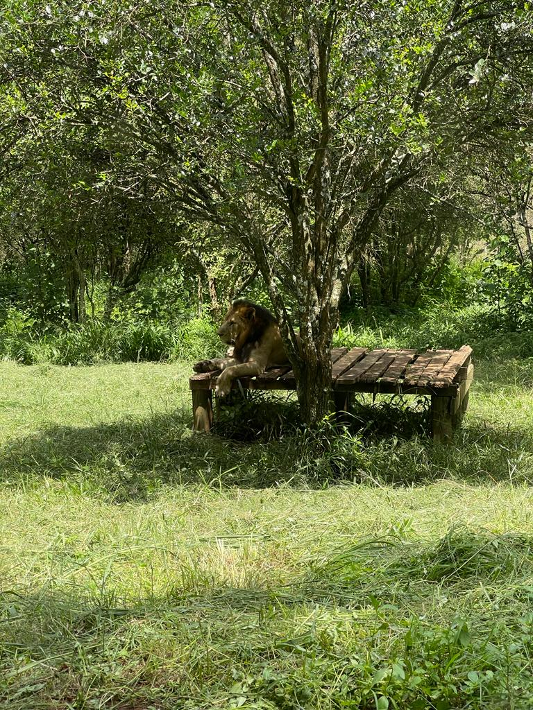
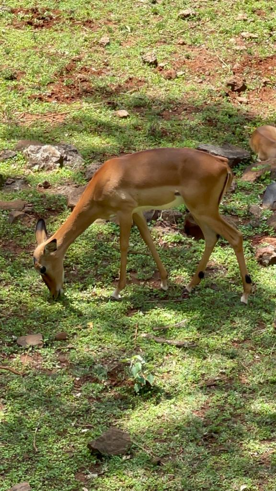
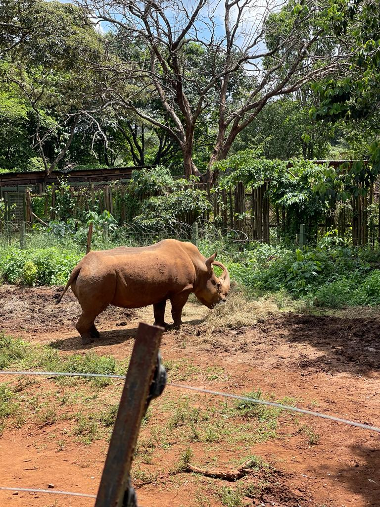

Nairobi Animal Orphanage
It's important to learn how to budget and manage money wisely, especially when it comes to traveling and having fun.
A budget friendly place to visit is Nairobi national Orphanage which is conveniently situated within Nairobi National Park, with a short travel time of only 20 minutes from the city center of Nairobi.
Observe the regal lion and lioness, the sturdy rhinoceros, and graceful antelopes coexisting harmoniously in their Kenyan abode. Don't allow outsiders to experience it before you do. Unveil the essence of the Kenya you call home.
When you were in primary school, you might have gone on a trip to Nairobi National Park. You can go back and visit the park again to make new memories and have fun all over again!
This unique orphanage provides a safe haven for a wide variety of animals that have been orphaned, injured, or rescued from the wild. Not only does a visit to the Nairobi Animals Orphanage offer an opportunity to witness the beauty and diversity of Africa's wildlife up close, but it also provides a valuable learning experience about conservation and animal welfare.
Nairobi Animal Orphanage Opening hours
The Nairobi Animal Orphanage welcomes visitors every day from 8am to 5pm.Saturday and Sunday included.
Costs
For adult citizens the cost is 225 ksh and for children it is 125 ksh. kws websiteTo go to the Nairobi National Park the costs are the same as for the orphanage.
Indulge in the tranquility of this serene location, allowing the surrounding nature to fill your lungs with a sense of peace and relaxation, transporting you far away from the bustle of the city.
Some of the animals we came across:

2.lion

3.Antelope

4.Rhino
